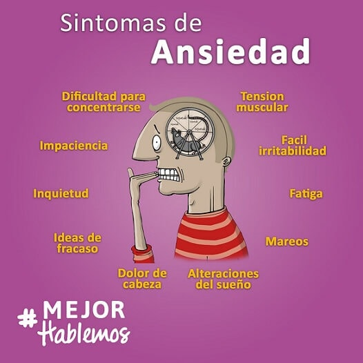

Ansiedad
La ansiedad es un sentimiento de miedo, temor e inquietud. Puede hacer que sude,
se sienta inquieto y tenso, y tener palpitaciones. Puede ser una reacción normal al
estrés. Por ejemplo, puede sentirse ansioso cuando se enfrenta a un problema difícil
en el trabajo, antes de tomar un examen o antes de tomar una decisión importante.

Los diferentes tipos de trastornos de ansiedad pueden tener síntomas diferentes.
Pero todos muestran una combinación de:
- Pensamientos o creencias ansiosos difíciles de controlar: Le hacen sentir inquieto y tenso e interfieren con su vida diaria. No desaparecen y pueden empeorar con el tiempo
- Síntomas físicos, como latidos cardíacos fuertes o rápidos, dolores y molestias inexplicables, mareos y falta de aire
- Cambios en el comportamiento, como evitar las actividades cotidianas que solía hacer
Los factores de riesgo para los diferentes tipos de trastornos de ansiedad pueden
variar. Existen algunos factores de riesgo generales para todos los tipos de
trastornos de ansiedad, incluyendo:
- Ciertos rasgos de personalidad, como ser tímido o retraído cuando está en situaciones nuevas o conoce personas nuevas
- Eventos traumáticos en la primera infancia o la edad adulta
- Antecedentes familiares de ansiedad u otros trastornos mentales
- Algunas afecciones de salud física, como problemas de tiroides o arritmia